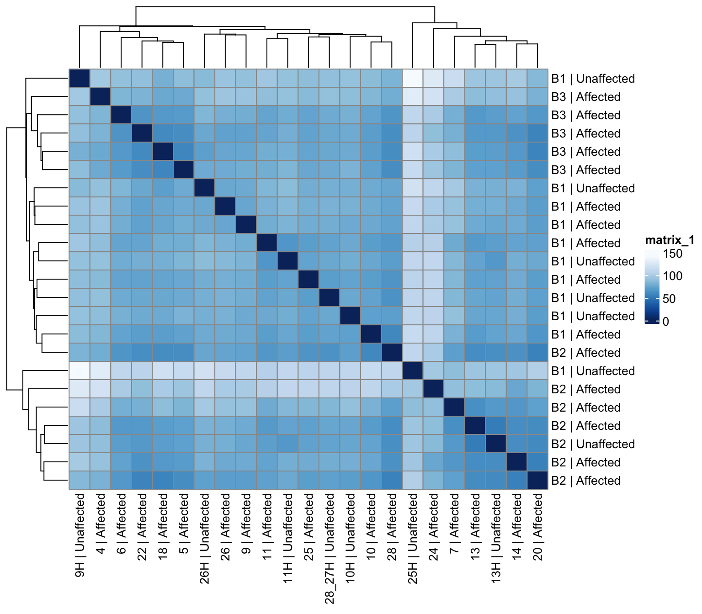
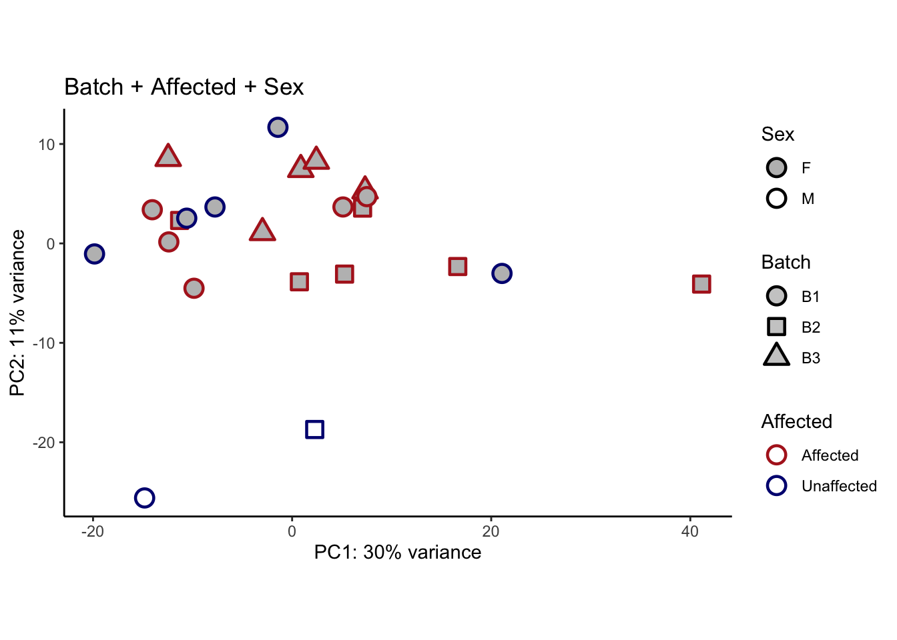
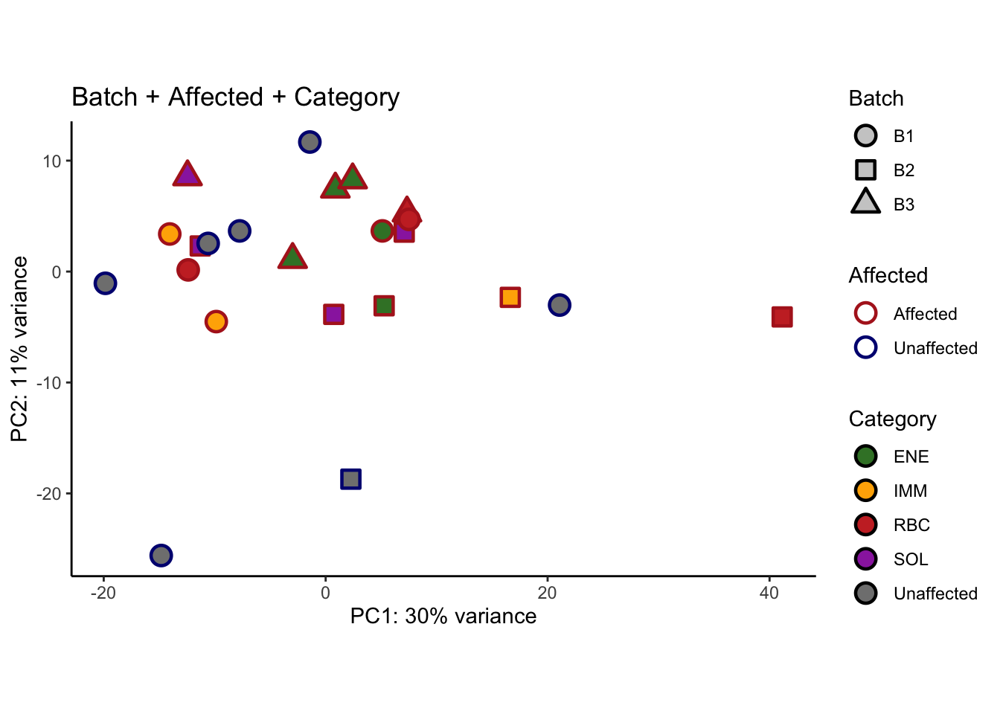
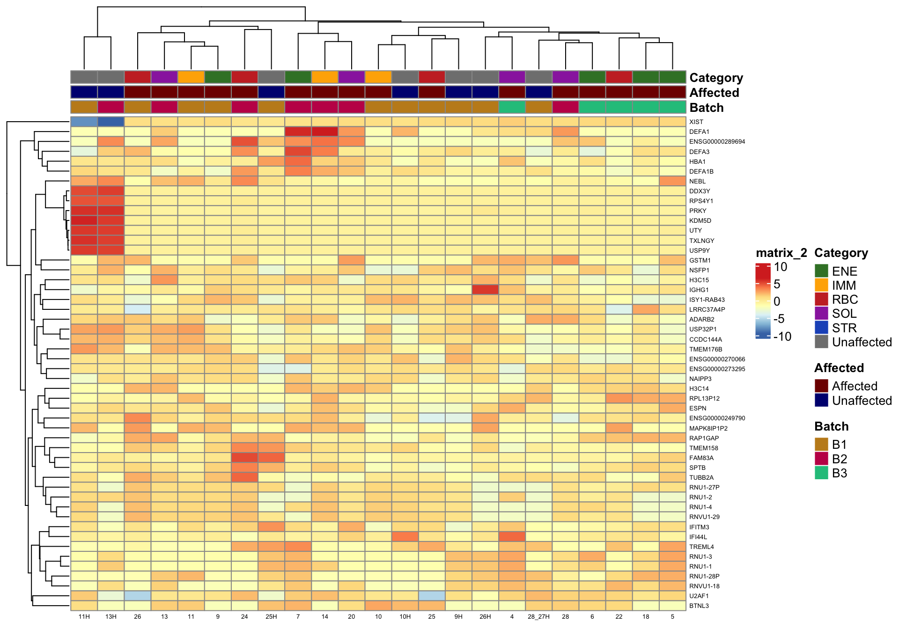
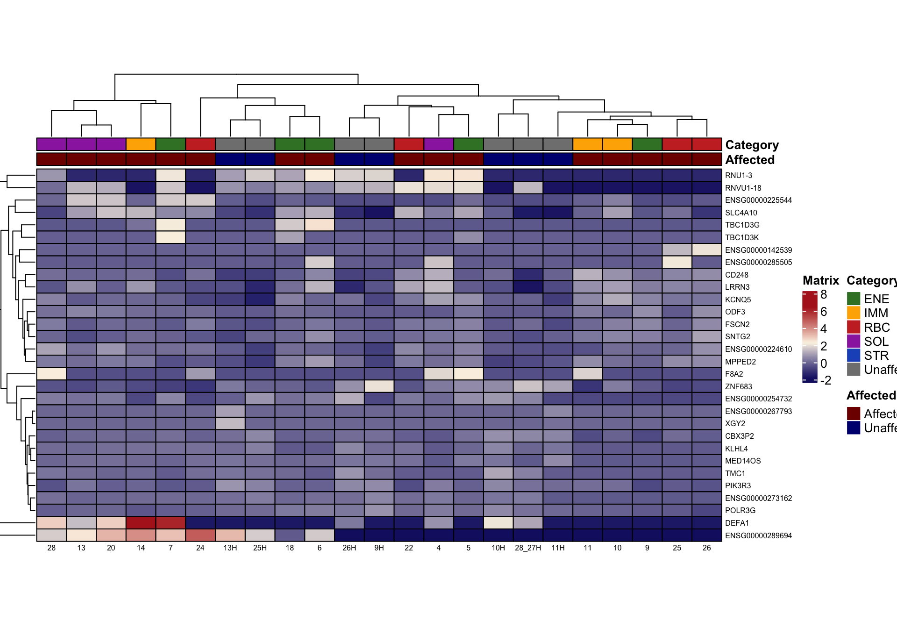
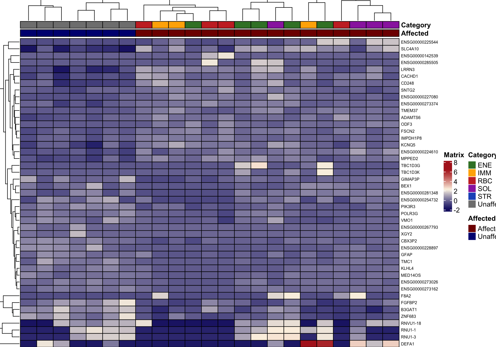
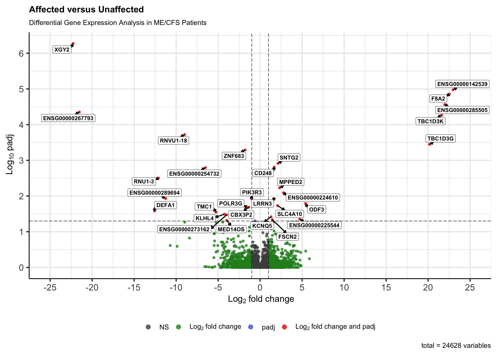
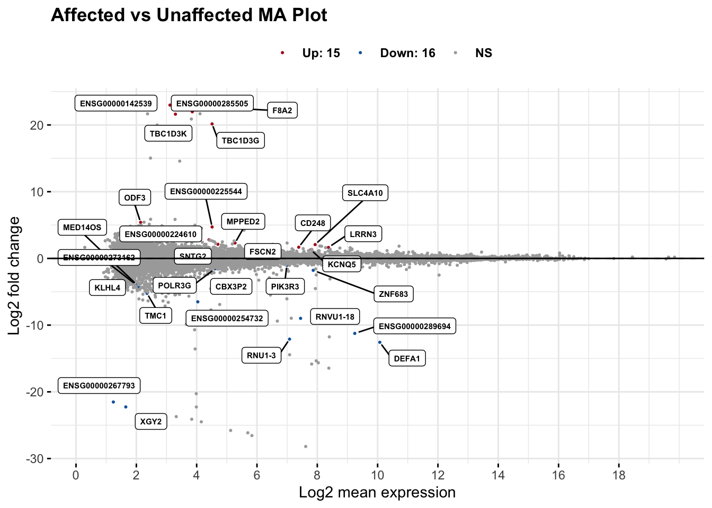
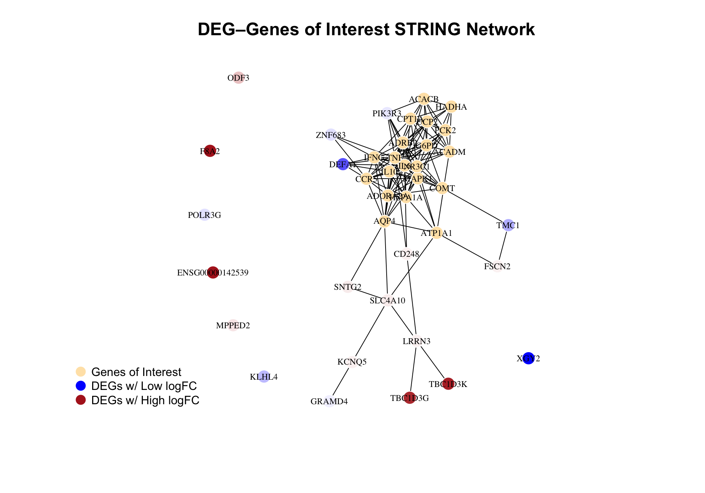

Last updated: 2026-04-14
Checks: 7 0
Knit directory: dge-analysis/
This reproducible R Markdown analysis was created with workflowr (version 1.7.1). The Checks tab describes the reproducibility checks that were applied when the results were created. The Past versions tab lists the development history.
Great! Since the R Markdown file has been committed to the Git repository, you know the exact version of the code that produced these results.
Great job! The global environment was empty. Objects defined in the global environment can affect the analysis in your R Markdown file in unknown ways. For reproduciblity it’s best to always run the code in an empty environment.
The command set.seed(20230618) was run prior to running
the code in the R Markdown file. Setting a seed ensures that any results
that rely on randomness, e.g. subsampling or permutations, are
reproducible.
Great job! Recording the operating system, R version, and package versions is critical for reproducibility.
Nice! There were no cached chunks for this analysis, so you can be confident that you successfully produced the results during this run.
Great job! Using relative paths to the files within your workflowr project makes it easier to run your code on other machines.
Great! You are using Git for version control. Tracking code development and connecting the code version to the results is critical for reproducibility.
The results in this page were generated with repository version 27aedd7. See the Past versions tab to see a history of the changes made to the R Markdown and HTML files.
Note that you need to be careful to ensure that all relevant files for
the analysis have been committed to Git prior to generating the results
(you can use wflow_publish or
wflow_git_commit). workflowr only checks the R Markdown
file, but you know if there are other scripts or data files that it
depends on. Below is the status of the Git repository when the results
were generated:
Ignored files:
Ignored: .DS_Store
Ignored: .github/.DS_Store
Ignored: dge-analysis/.DS_Store
Ignored: dge-analysis/.Rhistory
Ignored: dge-analysis/.Rproj.user/
Ignored: dge-analysis/.cursor/
Ignored: dge-analysis/AGENTS.md
Ignored: dge-analysis/analysis/.DS_Store
Ignored: dge-analysis/data/.DS_Store
Ignored: dge-analysis/output/.DS_Store
Ignored: dge-analysis/output/all-samples-analysis/
Ignored: dge-analysis/output/deconvolution/
Ignored: dge-analysis/output/publication-analysis/publication-analysis.RData
Ignored: dge-analysis/output/subgroup-chrn-analysis/CHRN-subgroup-analysis.RData
Ignored: dge-analysis/output/subgroup-hpp-analysis/HPP-subgroup-analysis.RData
Ignored: dge-analysis/output/subgroup-ion_channel-analysis/Ion_Channel-subgroup-analysis.RData
Ignored: dge-analysis/output/subgroup-mito-analysis/Mito-subgroup-analysis.RData
Ignored: dge-analysis/output/subgroup-potassium-analysis/
Ignored: dge-analysis/output/subgroup-rbc-analysis/RBC-subgroup-analysis.RData
Ignored: dge-analysis/renv/.DS_Store
Ignored: dge-analysis/renv/library/
Ignored: dge-analysis/renv/staging/
Ignored: phenotypic-analysis/.DS_Store
Ignored: variant-findings-plot/.DS_Store
Untracked files:
Untracked: dge-analysis/data/CIBERSORTx_Job1_output/
Untracked: dge-analysis/data/CIBERSORTx_Job2_output/
Untracked: dge-analysis/data/id_map.csv
Untracked: dge-analysis/output/publication-analysis/degs_padj_0.1.png
Untracked: dge-analysis/output/publication-analysis/supplemental_figure_4_significant_degs_padj_.05.png
Untracked: output/
Unstaged changes:
Modified: dge-analysis/analysis/_site.yml
Modified: dge-analysis/analysis/custom.css
Modified: dge-analysis/analysis/head.html
Modified: dge-analysis/code/helpers.R
Modified: dge-analysis/output/publication-analysis/Supplemental Table 5. Significant Differentially Expressed Genes.csv
Modified: dge-analysis/output/publication-analysis/batch-correction-limma/plot-counts/genes-of-interest/ACACB-subsetted-plot-counts.png
Modified: dge-analysis/output/publication-analysis/batch-correction-limma/plot-counts/genes-of-interest/ACADM-subsetted-plot-counts.png
Modified: dge-analysis/output/publication-analysis/batch-correction-limma/plot-counts/genes-of-interest/ACADVL-subsetted-plot-counts.png
Modified: dge-analysis/output/publication-analysis/batch-correction-limma/plot-counts/genes-of-interest/ADM2-subsetted-plot-counts.png
Modified: dge-analysis/output/publication-analysis/batch-correction-limma/plot-counts/genes-of-interest/ADORA2A-subsetted-plot-counts.png
Modified: dge-analysis/output/publication-analysis/batch-correction-limma/plot-counts/genes-of-interest/ADORA2B-subsetted-plot-counts.png
Modified: dge-analysis/output/publication-analysis/batch-correction-limma/plot-counts/genes-of-interest/ADRB2-subsetted-plot-counts.png
Modified: dge-analysis/output/publication-analysis/batch-correction-limma/plot-counts/genes-of-interest/ATP1A1-subsetted-plot-counts.png
Modified: dge-analysis/output/publication-analysis/batch-correction-limma/plot-counts/genes-of-interest/CALCB-subsetted-plot-counts.png
Modified: dge-analysis/output/publication-analysis/batch-correction-limma/plot-counts/genes-of-interest/CCR5-subsetted-plot-counts.png
Modified: dge-analysis/output/publication-analysis/batch-correction-limma/plot-counts/genes-of-interest/CHRFAM7A-subsetted-plot-counts.png
Modified: dge-analysis/output/publication-analysis/batch-correction-limma/plot-counts/genes-of-interest/COL6A3-subsetted-plot-counts.png
Modified: dge-analysis/output/publication-analysis/batch-correction-limma/plot-counts/genes-of-interest/COMT-subsetted-plot-counts.png
Modified: dge-analysis/output/publication-analysis/batch-correction-limma/plot-counts/genes-of-interest/CPT1A-subsetted-plot-counts.png
Modified: dge-analysis/output/publication-analysis/batch-correction-limma/plot-counts/genes-of-interest/CPT1B-subsetted-plot-counts.png
Modified: dge-analysis/output/publication-analysis/batch-correction-limma/plot-counts/genes-of-interest/CPT1C-subsetted-plot-counts.png
Modified: dge-analysis/output/publication-analysis/batch-correction-limma/plot-counts/genes-of-interest/CUBN-subsetted-plot-counts.png
Modified: dge-analysis/output/publication-analysis/batch-correction-limma/plot-counts/genes-of-interest/CYTH2-subsetted-plot-counts.png
Modified: dge-analysis/output/publication-analysis/batch-correction-limma/plot-counts/genes-of-interest/DENND1A-subsetted-plot-counts.png
Modified: dge-analysis/output/publication-analysis/batch-correction-limma/plot-counts/genes-of-interest/DMXL2-subsetted-plot-counts.png
Modified: dge-analysis/output/publication-analysis/batch-correction-limma/plot-counts/genes-of-interest/ELOVL4-subsetted-plot-counts.png
Modified: dge-analysis/output/publication-analysis/batch-correction-limma/plot-counts/genes-of-interest/ENO3-subsetted-plot-counts.png
Modified: dge-analysis/output/publication-analysis/batch-correction-limma/plot-counts/genes-of-interest/ETFB-subsetted-plot-counts.png
Modified: dge-analysis/output/publication-analysis/batch-correction-limma/plot-counts/genes-of-interest/FCRL1-subsetted-plot-counts.png
Modified: dge-analysis/output/publication-analysis/batch-correction-limma/plot-counts/genes-of-interest/FKBP5-subsetted-plot-counts.png
Modified: dge-analysis/output/publication-analysis/batch-correction-limma/plot-counts/genes-of-interest/G6PD-subsetted-plot-counts.png
Modified: dge-analysis/output/publication-analysis/batch-correction-limma/plot-counts/genes-of-interest/GABRB3-subsetted-plot-counts.png
Modified: dge-analysis/output/publication-analysis/batch-correction-limma/plot-counts/genes-of-interest/GIPR-subsetted-plot-counts.png
Modified: dge-analysis/output/publication-analysis/batch-correction-limma/plot-counts/genes-of-interest/GLYCTK-subsetted-plot-counts.png
Modified: dge-analysis/output/publication-analysis/batch-correction-limma/plot-counts/genes-of-interest/GMPPB-subsetted-plot-counts.png
Modified: dge-analysis/output/publication-analysis/batch-correction-limma/plot-counts/genes-of-interest/GPNMB-subsetted-plot-counts.png
Modified: dge-analysis/output/publication-analysis/batch-correction-limma/plot-counts/genes-of-interest/HADHA-subsetted-plot-counts.png
Modified: dge-analysis/output/publication-analysis/batch-correction-limma/plot-counts/genes-of-interest/HSPA1A-subsetted-plot-counts.png
Modified: dge-analysis/output/publication-analysis/batch-correction-limma/plot-counts/genes-of-interest/HTR6-subsetted-plot-counts.png
Modified: dge-analysis/output/publication-analysis/batch-correction-limma/plot-counts/genes-of-interest/IDO1-subsetted-plot-counts.png
Modified: dge-analysis/output/publication-analysis/batch-correction-limma/plot-counts/genes-of-interest/IFNG-subsetted-plot-counts.png
Modified: dge-analysis/output/publication-analysis/batch-correction-limma/plot-counts/genes-of-interest/IL10-subsetted-plot-counts.png
Modified: dge-analysis/output/publication-analysis/batch-correction-limma/plot-counts/genes-of-interest/IL6-subsetted-plot-counts.png
Modified: dge-analysis/output/publication-analysis/batch-correction-limma/plot-counts/genes-of-interest/KLHL7-subsetted-plot-counts.png
Modified: dge-analysis/output/publication-analysis/batch-correction-limma/plot-counts/genes-of-interest/LMBRD1-subsetted-plot-counts.png
Modified: dge-analysis/output/publication-analysis/batch-correction-limma/plot-counts/genes-of-interest/MADD-subsetted-plot-counts.png
Modified: dge-analysis/output/publication-analysis/batch-correction-limma/plot-counts/genes-of-interest/MAPK1-subsetted-plot-counts.png
Modified: dge-analysis/output/publication-analysis/batch-correction-limma/plot-counts/genes-of-interest/MCCC1-subsetted-plot-counts.png
Modified: dge-analysis/output/publication-analysis/batch-correction-limma/plot-counts/genes-of-interest/MCCC2-subsetted-plot-counts.png
Modified: dge-analysis/output/publication-analysis/batch-correction-limma/plot-counts/genes-of-interest/MINPP1-subsetted-plot-counts.png
Modified: dge-analysis/output/publication-analysis/batch-correction-limma/plot-counts/genes-of-interest/MLYCD-subsetted-plot-counts.png
Modified: dge-analysis/output/publication-analysis/batch-correction-limma/plot-counts/genes-of-interest/MMAA-subsetted-plot-counts.png
Modified: dge-analysis/output/publication-analysis/batch-correction-limma/plot-counts/genes-of-interest/MMACHC-subsetted-plot-counts.png
Modified: dge-analysis/output/publication-analysis/batch-correction-limma/plot-counts/genes-of-interest/MYH9-subsetted-plot-counts.png
Modified: dge-analysis/output/publication-analysis/batch-correction-limma/plot-counts/genes-of-interest/NLRP3-subsetted-plot-counts.png
Modified: dge-analysis/output/publication-analysis/batch-correction-limma/plot-counts/genes-of-interest/NR3C1-subsetted-plot-counts.png
Modified: dge-analysis/output/publication-analysis/batch-correction-limma/plot-counts/genes-of-interest/NUP42-subsetted-plot-counts.png
Modified: dge-analysis/output/publication-analysis/batch-correction-limma/plot-counts/genes-of-interest/OXTR-subsetted-plot-counts.png
Modified: dge-analysis/output/publication-analysis/batch-correction-limma/plot-counts/genes-of-interest/P2RX7-subsetted-plot-counts.png
Modified: dge-analysis/output/publication-analysis/batch-correction-limma/plot-counts/genes-of-interest/PCK2-subsetted-plot-counts.png
Modified: dge-analysis/output/publication-analysis/batch-correction-limma/plot-counts/genes-of-interest/PGM1-subsetted-plot-counts.png
Modified: dge-analysis/output/publication-analysis/batch-correction-limma/plot-counts/genes-of-interest/POLG-subsetted-plot-counts.png
Modified: dge-analysis/output/publication-analysis/batch-correction-limma/plot-counts/genes-of-interest/PTPN22-subsetted-plot-counts.png
Modified: dge-analysis/output/publication-analysis/batch-correction-limma/plot-counts/genes-of-interest/SLC12A3-subsetted-plot-counts.png
Modified: dge-analysis/output/publication-analysis/batch-correction-limma/plot-counts/genes-of-interest/SLC25A20-subsetted-plot-counts.png
Modified: dge-analysis/output/publication-analysis/batch-correction-limma/plot-counts/genes-of-interest/SLC7A9-subsetted-plot-counts.png
Modified: dge-analysis/output/publication-analysis/batch-correction-limma/plot-counts/genes-of-interest/SMCR8-subsetted-plot-counts.png
Modified: dge-analysis/output/publication-analysis/batch-correction-limma/plot-counts/genes-of-interest/SURF1-subsetted-plot-counts.png
Modified: dge-analysis/output/publication-analysis/batch-correction-limma/plot-counts/genes-of-interest/SYT6-subsetted-plot-counts.png
Modified: dge-analysis/output/publication-analysis/batch-correction-limma/plot-counts/genes-of-interest/TACO1-subsetted-plot-counts.png
Modified: dge-analysis/output/publication-analysis/batch-correction-limma/plot-counts/genes-of-interest/TNF-subsetted-plot-counts.png
Modified: dge-analysis/output/publication-analysis/batch-correction-limma/plot-counts/genes-of-interest/TOMM7-subsetted-plot-counts.png
Modified: dge-analysis/output/publication-analysis/batch-correction-limma/plot-counts/genes-of-interest/UCP2-subsetted-plot-counts.png
Modified: dge-analysis/output/publication-analysis/batch-correction-limma/plot-counts/genes-of-interest/VIPR2-subsetted-plot-counts.png
Modified: dge-analysis/output/publication-analysis/batch-correction-limma/plot-counts/genes-of-interest/faceted_genes_of_interest_plot_counts.png
Modified: dge-analysis/output/publication-analysis/batch-correction-limma/plot-counts/padj-05/CBX3P2-subsetted-plot-counts.png
Modified: dge-analysis/output/publication-analysis/batch-correction-limma/plot-counts/padj-05/CD248-subsetted-plot-counts.png
Modified: dge-analysis/output/publication-analysis/batch-correction-limma/plot-counts/padj-05/DEFA1-subsetted-plot-counts.png
Modified: dge-analysis/output/publication-analysis/batch-correction-limma/plot-counts/padj-05/ENSG00000142539-subsetted-plot-counts.png
Modified: dge-analysis/output/publication-analysis/batch-correction-limma/plot-counts/padj-05/ENSG00000224610-subsetted-plot-counts.png
Modified: dge-analysis/output/publication-analysis/batch-correction-limma/plot-counts/padj-05/ENSG00000225544-subsetted-plot-counts.png
Modified: dge-analysis/output/publication-analysis/batch-correction-limma/plot-counts/padj-05/ENSG00000254732-subsetted-plot-counts.png
Modified: dge-analysis/output/publication-analysis/batch-correction-limma/plot-counts/padj-05/ENSG00000267793-subsetted-plot-counts.png
Modified: dge-analysis/output/publication-analysis/batch-correction-limma/plot-counts/padj-05/ENSG00000273162-subsetted-plot-counts.png
Modified: dge-analysis/output/publication-analysis/batch-correction-limma/plot-counts/padj-05/ENSG00000285505-subsetted-plot-counts.png
Modified: dge-analysis/output/publication-analysis/batch-correction-limma/plot-counts/padj-05/ENSG00000289694-subsetted-plot-counts.png
Modified: dge-analysis/output/publication-analysis/batch-correction-limma/plot-counts/padj-05/F8A2-subsetted-plot-counts.png
Modified: dge-analysis/output/publication-analysis/batch-correction-limma/plot-counts/padj-05/FSCN2-subsetted-plot-counts.png
Modified: dge-analysis/output/publication-analysis/batch-correction-limma/plot-counts/padj-05/KCNQ5-subsetted-plot-counts.png
Modified: dge-analysis/output/publication-analysis/batch-correction-limma/plot-counts/padj-05/KLHL4-subsetted-plot-counts.png
Modified: dge-analysis/output/publication-analysis/batch-correction-limma/plot-counts/padj-05/LRRN3-subsetted-plot-counts.png
Modified: dge-analysis/output/publication-analysis/batch-correction-limma/plot-counts/padj-05/MED14OS-subsetted-plot-counts.png
Modified: dge-analysis/output/publication-analysis/batch-correction-limma/plot-counts/padj-05/MPPED2-subsetted-plot-counts.png
Modified: dge-analysis/output/publication-analysis/batch-correction-limma/plot-counts/padj-05/ODF3-subsetted-plot-counts.png
Modified: dge-analysis/output/publication-analysis/batch-correction-limma/plot-counts/padj-05/PIK3R3-subsetted-plot-counts.png
Modified: dge-analysis/output/publication-analysis/batch-correction-limma/plot-counts/padj-05/POLR3G-subsetted-plot-counts.png
Modified: dge-analysis/output/publication-analysis/batch-correction-limma/plot-counts/padj-05/RNU1-3-subsetted-plot-counts.png
Modified: dge-analysis/output/publication-analysis/batch-correction-limma/plot-counts/padj-05/RNVU1-18-subsetted-plot-counts.png
Modified: dge-analysis/output/publication-analysis/batch-correction-limma/plot-counts/padj-05/SLC4A10-subsetted-plot-counts.png
Modified: dge-analysis/output/publication-analysis/batch-correction-limma/plot-counts/padj-05/SNTG2-subsetted-plot-counts.png
Modified: dge-analysis/output/publication-analysis/batch-correction-limma/plot-counts/padj-05/TBC1D3G-subsetted-plot-counts.png
Modified: dge-analysis/output/publication-analysis/batch-correction-limma/plot-counts/padj-05/TBC1D3K-subsetted-plot-counts.png
Modified: dge-analysis/output/publication-analysis/batch-correction-limma/plot-counts/padj-05/TMC1-subsetted-plot-counts.png
Modified: dge-analysis/output/publication-analysis/batch-correction-limma/plot-counts/padj-05/XGY2-subsetted-plot-counts.png
Modified: dge-analysis/output/publication-analysis/batch-correction-limma/plot-counts/padj-05/ZNF683-subsetted-plot-counts.png
Modified: dge-analysis/output/publication-analysis/batch-correction-limma/plot-counts/padj-05/faceted_genes_of_interest_plot_counts.png
Modified: dge-analysis/output/publication-analysis/batch-correction-limma/plot-counts/spta1-genes-of-interest/AHSP-subsetted-plot-counts.png
Modified: dge-analysis/output/publication-analysis/batch-correction-limma/plot-counts/spta1-genes-of-interest/EPB42-subsetted-plot-counts.png
Modified: dge-analysis/output/publication-analysis/batch-correction-limma/plot-counts/spta1-genes-of-interest/GYPA-subsetted-plot-counts.png
Modified: dge-analysis/output/publication-analysis/batch-correction-limma/plot-counts/spta1-genes-of-interest/GYPB-subsetted-plot-counts.png
Modified: dge-analysis/output/publication-analysis/batch-correction-limma/plot-counts/spta1-genes-of-interest/GYPE-subsetted-plot-counts.png
Modified: dge-analysis/output/publication-analysis/batch-correction-limma/plot-counts/spta1-genes-of-interest/HEMGN-subsetted-plot-counts.png
Modified: dge-analysis/output/publication-analysis/batch-correction-limma/plot-counts/spta1-genes-of-interest/KEL-subsetted-plot-counts.png
Modified: dge-analysis/output/publication-analysis/batch-correction-limma/plot-counts/spta1-genes-of-interest/RHAG-subsetted-plot-counts.png
Modified: dge-analysis/output/publication-analysis/batch-correction-limma/plot-counts/spta1-genes-of-interest/SLC4A1-subsetted-plot-counts.png
Modified: dge-analysis/output/publication-analysis/batch-correction-limma/plot-counts/spta1-genes-of-interest/SPTA1-subsetted-plot-counts.png
Modified: dge-analysis/output/publication-analysis/batch-correction-limma/plot-counts/spta1-genes-of-interest/SPTB-subsetted-plot-counts.png
Modified: dge-analysis/output/publication-analysis/batch-correction-limma/plot-counts/spta1-genes-of-interest/SPTBN5-subsetted-plot-counts.png
Modified: dge-analysis/output/publication-analysis/batch-correction-limma/plot-counts/spta1-genes-of-interest/faceted_genes_of_interest_plot_counts.png
Modified: dge-analysis/output/publication-analysis/counts_vst_limma_subsetted.csv
Modified: dge-analysis/output/publication-analysis/counts_vst_subsetted.csv
Modified: dge-analysis/output/publication-analysis/res_aff_vs_unaff_df_sub_genename.csv
Modified: dge-analysis/output/publication-analysis/res_aff_vs_unaff_df_sub_genename_05.csv
Modified: dge-analysis/output/publication-analysis/res_aff_vs_unaff_df_sub_genename_padj1.csv
Modified: dge-analysis/output/publication-analysis/res_aff_vs_unaff_df_sub_genename_padj1_lfc1.csv
Modified: dge-analysis/output/publication-analysis/res_aff_vs_unaff_significant_subsetted_mygene.csv
Modified: dge-analysis/output/publication-analysis/res_aff_vs_unaff_significant_subsetted_samples.csv
Modified: dge-analysis/output/publication-analysis/res_aff_vs_unaff_sub.csv
Modified: dge-analysis/output/publication-analysis/subsetted-analysis-volcano-plot.png
Modified: dge-analysis/output/subgroup-chrn-analysis/counts_vst.csv
Modified: dge-analysis/output/subgroup-chrn-analysis/counts_vst_limma.csv
Modified: dge-analysis/output/subgroup-chrn-analysis/res_chrn_vs_unaff.csv
Modified: dge-analysis/output/subgroup-chrn-analysis/res_chrn_vs_unaff_df_genename_05.csv
Modified: dge-analysis/output/subgroup-chrn-analysis/res_chrn_vs_unaff_df_genename_padj05_lfc1.csv
Modified: dge-analysis/output/subgroup-chrn-analysis/res_chrn_vs_unaff_df_genename_padj1.csv
Modified: dge-analysis/output/subgroup-chrn-analysis/res_chrn_vs_unaff_df_genename_padj1_lfc1.csv
Modified: dge-analysis/output/subgroup-chrn-analysis/res_chrn_vs_unaff_siggenes.csv
Modified: dge-analysis/output/subgroup-chrn-analysis/res_subgroup_vs_unaff_df_genename.csv
Modified: dge-analysis/output/subgroup-hpp-analysis/counts_vst.csv
Modified: dge-analysis/output/subgroup-hpp-analysis/counts_vst_limma.csv
Modified: dge-analysis/output/subgroup-hpp-analysis/res_hpp_vs_unaff.csv
Modified: dge-analysis/output/subgroup-hpp-analysis/res_hpp_vs_unaff_df_genename_05.csv
Modified: dge-analysis/output/subgroup-hpp-analysis/res_hpp_vs_unaff_df_genename_padj05_lfc1.csv
Modified: dge-analysis/output/subgroup-hpp-analysis/res_hpp_vs_unaff_df_genename_padj1.csv
Modified: dge-analysis/output/subgroup-hpp-analysis/res_hpp_vs_unaff_df_genename_padj1_lfc1.csv
Modified: dge-analysis/output/subgroup-hpp-analysis/res_hpp_vs_unaff_siggenes.csv
Modified: dge-analysis/output/subgroup-hpp-analysis/res_subgroup_vs_unaff_df_genename.csv
Modified: dge-analysis/output/subgroup-ion_channel-analysis/counts_vst.csv
Modified: dge-analysis/output/subgroup-ion_channel-analysis/counts_vst_limma.csv
Modified: dge-analysis/output/subgroup-ion_channel-analysis/res_ion_channel_vs_unaff.csv
Modified: dge-analysis/output/subgroup-ion_channel-analysis/res_ion_channel_vs_unaff_df_genename_05.csv
Modified: dge-analysis/output/subgroup-ion_channel-analysis/res_ion_channel_vs_unaff_df_genename_padj05_lfc1.csv
Modified: dge-analysis/output/subgroup-ion_channel-analysis/res_ion_channel_vs_unaff_df_genename_padj1.csv
Modified: dge-analysis/output/subgroup-ion_channel-analysis/res_ion_channel_vs_unaff_df_genename_padj1_lfc1.csv
Modified: dge-analysis/output/subgroup-ion_channel-analysis/res_ion_channel_vs_unaff_siggenes.csv
Modified: dge-analysis/output/subgroup-ion_channel-analysis/res_subgroup_vs_unaff_df_genename.csv
Modified: dge-analysis/output/subgroup-mito-analysis/counts_vst.csv
Modified: dge-analysis/output/subgroup-mito-analysis/counts_vst_limma.csv
Modified: dge-analysis/output/subgroup-mito-analysis/res_mito_vs_unaff.csv
Modified: dge-analysis/output/subgroup-mito-analysis/res_mito_vs_unaff_df_genename_05.csv
Modified: dge-analysis/output/subgroup-mito-analysis/res_mito_vs_unaff_df_genename_padj05_lfc1.csv
Modified: dge-analysis/output/subgroup-mito-analysis/res_mito_vs_unaff_df_genename_padj1.csv
Modified: dge-analysis/output/subgroup-mito-analysis/res_mito_vs_unaff_df_genename_padj1_lfc1.csv
Modified: dge-analysis/output/subgroup-mito-analysis/res_mito_vs_unaff_siggenes.csv
Modified: dge-analysis/output/subgroup-mito-analysis/res_subgroup_vs_unaff_df_genename.csv
Modified: dge-analysis/output/subgroup-rbc-analysis/counts_vst.csv
Modified: dge-analysis/output/subgroup-rbc-analysis/counts_vst_limma.csv
Modified: dge-analysis/output/subgroup-rbc-analysis/res_rbc_vs_unaff.csv
Modified: dge-analysis/output/subgroup-rbc-analysis/res_rbc_vs_unaff_df_genename_05.csv
Modified: dge-analysis/output/subgroup-rbc-analysis/res_rbc_vs_unaff_df_genename_padj05_lfc1.csv
Modified: dge-analysis/output/subgroup-rbc-analysis/res_rbc_vs_unaff_df_genename_padj1.csv
Modified: dge-analysis/output/subgroup-rbc-analysis/res_rbc_vs_unaff_df_genename_padj1_lfc1.csv
Modified: dge-analysis/output/subgroup-rbc-analysis/res_rbc_vs_unaff_siggenes.csv
Modified: dge-analysis/output/subgroup-rbc-analysis/res_subgroup_vs_unaff_df_genename.csv
Modified: dge-analysis/output/subgroup-rbc-analysis/volcano-plot-rbc.png
Modified: dge-analysis/renv.lock
Note that any generated files, e.g. HTML, png, CSS, etc., are not included in this status report because it is ok for generated content to have uncommitted changes.
These are the previous versions of the repository in which changes were
made to the R Markdown
(dge-analysis/analysis/subsetted-condition-analysis.Rmd)
and HTML (docs/subsetted-condition-analysis.html) files. If
you’ve configured a remote Git repository (see
?wflow_git_remote), click on the hyperlinks in the table
below to view the files as they were in that past version.
| File | Version | Author | Date | Message |
|---|---|---|---|---|
| Rmd | 27aedd7 | sdhutchins | 2026-04-14 | Add deconvolution and publication PCA plots. |
| html | 3553e31 | GitHub | 2025-11-12 | Add docs folder to top level. (#9) |
| Rmd | 9f4f1fd | GitHub | 2025-11-06 | Reorganize repository. (#4) |
| html | 9f4f1fd | GitHub | 2025-11-06 | Reorganize repository. (#4) |
| html | a6247eb | GitHub | 2025-07-23 | Prepare for PhysGen submission. (#2) |
| html | b56e0ee | GitHub | 2025-02-03 | Prep repository for publication. (#1) |
| html | 721ce08 | sdhutchins | 2024-07-15 | Build site. |
| html | fefc055 | sdhutchins | 2024-07-12 | Build site. |
| html | d5cad3c | sdhutchins | 2024-07-12 | Build site. |
| html | 27d94ad | sdhutchins | 2024-07-12 | Build site. |
| html | c32ee82 | sdhutchins | 2024-07-12 | Build site. |
| html | 614a5fc | sdhutchins | 2024-06-13 | Build site. |
| html | 841b69b | sdhutchins | 2024-06-12 | Build site. |
| html | e92fe76 | sdhutchins | 2024-06-11 | Build site. |
| html | 281ec58 | sdhutchins | 2024-06-11 | Build site. |
| html | f5411e0 | sdhutchins | 2024-05-20 | Build site. |
| html | 6b0693d | sdhutchins | 2024-05-17 | Build site. |
| html | df552ab | sdhutchins | 2024-05-17 | Build site. |
| html | 573ba28 | sdhutchins | 2024-05-16 | Build site. |
| html | be532a2 | sdhutchins | 2024-05-10 | Build site. |
| html | 8a91bc0 | sdhutchins | 2024-04-29 | Build site. |
| html | ac28b95 | sdhutchins | 2024-04-22 | Build site. |
| html | bd1bae0 | sdhutchins | 2024-04-12 | Build site. |
| html | c835cb7 | sdhutchins | 2024-04-12 | Build site. |
| html | 18ba804 | sdhutchins | 2024-04-12 | Build site. |
| html | f2c768c | sdhutchins | 2024-04-11 | Build site. |
| html | 1e45c53 | sdhutchins | 2024-04-09 | Build site. |
| html | 1804028 | sdhutchins | 2024-04-08 | Update metadata. |
| html | 0c1afe6 | sdhutchins | 2024-03-13 | Build site. |
This analysis compares Affected vs Unaffected gene expression after adjusting for Batch.
DESeq2 models raw counts with a negative binomial GLM, estimates
dispersions, and yields log2 fold changes and FDR-adjusted p-values
(padj) for the contrast of interest. That means inference
stays on the count scale; transforms below are for visualization and
batch removal only.
This document walks through the DESeqDataSet, filtering,
DESeq(), VST, limma batch correction on VST for plots, and
the main figures and tables. Method details: DESeq2
vignette.
Ensure you have followed instructions in the readme on activating the renv environment.
library(tidyverse) # Available via CRAN
library(DESeq2) # Available via Bioconductor
library(RColorBrewer) # Available via CRAN
library(pheatmap) # Available via CRAN
library(genefilter) # Available via Bioconductor
library(limma) # Available via Bioconductor
library(gprofiler2) # Available via CRAN
library(biomaRt) # Available via Bioconductor
library(plotly) # Available via CRAN
library(ggpubr) # Available via CRAN
library(rmarkdown) # Available via CRAN
library(clusterProfiler) # Available via Bioconductor
library(org.Hs.eg.db) # Available via Bioconductor
library(ggrepel) # Available via CRAN
library(ReactomePA) # Available via Bioconductor
library(mygene) # Available via Bioconductor
library(DOSE) # Available via Bioconductor
library(enrichR) # Available via Bioconductor
library(STRINGdb) # Available via Bioconductor
library(EnhancedVolcano)
library(ComplexHeatmap)
library(DT)
library(igraph)Pass raw (or equivalently scaled) counts into
DESeqDataSetFromMatrix(). Transformed values are invalid as
input because they distort the mean–variance model.
Counts are from star-salmon; metadata lives in data/.
check_order() reorders rows/columns so sample i in
metadata is column i in the matrix, which prevents silent
mislabeling.
# Import counts and metadata
sample_metadata <- read_csv("data/Metadata_2024_11_20.csv")
row.names(sample_metadata) <- sample_metadata$ID
counts <- read_tsv("data/star-salmon/salmon_merged_gene_counts_length_scaled.tsv")
# Import variants of interest
genes_of_interest <- read_csv("data/Prioritized_Genes_From_WGS_2025_06_18.csv")
genes_of_interest <- unique(genes_of_interest$Genes)
genes_of_interest <- genes_of_interest[!is.na(genes_of_interest)]
# Use first column (gene_id) for row names
counts <- data.frame(counts, row.names = 1, check.names = FALSE)
counts$Ensembl_ID <- row.names(counts)
drop <- c("Ensembl_ID", "gene_name")
gene_info <- counts[, drop]
counts <- counts[, !(names(counts) %in% drop)] # remove both columns
# What gene (based on variants samples have) is this analysis based on
analysis_name <- "subsetted"
outpath_var <- paste0(analysis_name, "-analysis")
# Check that data is ordered properly
sample_metadata <- check_order(sample_metadata = sample_metadata, counts = counts)
genes_biomart <- retrieve_gene_info(values = gene_info$Ensembl_ID, filters = "ensembl_gene_id_version")A DESeqDataSet bundles counts, sample metadata, and the design.
design = ~ Batch + Affected means each gene’s mean is
explained by batch then affected status; results() with
default settings returns Affected vs Unaffected because
Affected is last. We still pass an explicit contrast in
results for clarity.
Genes with total count < 50 are dropped before
DESeq() to save time and stabilize dispersion estimation.
results() still applies DESeq2’s independent filtering on
its own; this step is an extra coarse gate.
DESeq() runs size factor estimation, dispersion
shrinkage, GLM fit, and Wald tests on the count matrix. Nothing here
uses VST or limma; those steps come later for display only.
sample_metadata$Family <- factor(sample_metadata$Family)
sample_metadata$Affected <- factor(sample_metadata$Affected)
sample_metadata$Batch <- factor(sample_metadata$Batch)
sample_metadata$Sex <- factor(sample_metadata$Sex)
sample_metadata$Ancestry <- factor(sample_metadata$Ancestry)
sample_metadata$Category <- factor(sample_metadata$Category)
sample_metadata$Subgroup <- factor(sample_metadata$Subgroup)
# Account for Batch and Affected Status
dds <- DESeqDataSetFromMatrix(
countData = round(counts), colData = sample_metadata,
design = ~ Batch + Affected
)
# Pre-filtering: Keep only rows that have at least 10 reads total
keep <- rowSums(counts(dds)) >= 50
dds <- dds[keep, ]
# Remove samples from families with multiple samples
# View Excluded_Samples.csv to learn why these were excluded
remove_multiple_fam <- c("8", "12", "19", "21", "23", "27")
# Save excluded/removed samples
# Code is commented out since this is for 1 time usage
# excluded_samples_df <- filter(sample_metadata,
# ID %in% remove_multiple_fam)
# write.csv(excluded_samples_df, "data/Excluded_Samples.csv")
# Create a logical vector to index the columns you want to keep
kept_fam_members <- !(colnames(dds) %in% remove_multiple_fam)
dds <- dds[, kept_fam_members]
# Run DESeq function
dds <- DESeq(dds)
# Normalize gene counts for differences in seq. depth/global differences
counts_norm <- counts(dds, normalized = TRUE)VST maps counts to a scale where variance is roughly flat across
means, so PCA and distance heatmaps are not driven only by highly
expressed genes. blind = FALSE means the transform uses
dispersions from the fitted model (preferred when a strong biological
contrast exists).
vsd <- vst(dds, blind = FALSE)removeBatchEffect() regresses out the Batch
factor from the VST matrix while preserving the Affected
signal when you supply the full design. Reported p-values still come
from dds, not from this corrected matrix.
CSV exports (counts_vst_*) archive VST before and after
batch removal for supplements and external tools.
# Extract VST counts from the DESeq2 object
counts_vst <- assay(vsd)
# Save the VST counts to a CSV file
write.csv(counts_vst, file = "output/publication-analysis/counts_vst_subsetted.csv")
# Create a model matrix with Batch and Affected as covariates
mm <- model.matrix(~ Batch + Affected, colData(vsd))
# Remove batch effects using the Limma package
counts_vst_limma <- limma::removeBatchEffect(counts_vst,
batch = vsd$Batch,
design = mm
)Coefficients not estimable: batch1 batch2 # Save the batch-effect corrected counts to a CSV file
write.csv(counts_vst_limma, file = "output/publication-analysis/counts_vst_limma_subsetted.csv")
# Replace the VST counts in the DESeq2 object with the batch-effect corrected counts
vsd_limma <- vsd
assay(vsd_limma) <- counts_vst_limmaDistances use batch-corrected VST with samples as vectors across genes. Clustering sorts rows/columns so similar expression profiles sit together; inspect for outliers or residual batch bands.
# Compute sample-to-sample distances using the corrected VST data
sample_dists_all <- dist(t(assay(vsd_limma)))
# Convert the distance object to a matrix for visualization
sample_dist_matrix_all <- as.matrix(sample_dists_all)
# Set row and column names for the distance matrix using metadata
rownames(sample_dist_matrix_all) <- paste(vsd_limma$Batch, vsd_limma$Affected, sep = " | ")
colnames(sample_dist_matrix_all) <- paste(vsd_limma$ID, vsd_limma$Affected, sep = " | ")
# Define a color palette for the heatmap
colors <- colorRampPalette(rev(brewer.pal(9, "Blues")))(255)
# Plot the heatmap of sample distances with hierarchical clustering
pheatmap(sample_dist_matrix_all,
clustering_distance_rows = sample_dists_all,
clustering_distance_cols = sample_dists_all,
col = colors
)
PCA finds axes of greatest variance across genes;
plotPCA / prepare_pca_data use the
batch-corrected VST so PC1/PC2 summarize biology after removing batch.
Colors encode metadata so you can see whether Affected, Sex, or Batch
align with those axes.
affected_colors <- c("Affected" = "firebrick", "Unaffected" = "navy")
sex_fills <- c("F" = "grey", "M" = "white")
# Prepare PCA data from the corrected VST data
# intgroup specifies the metadata variables to include in the PCA
pca_results <- prepare_pca_data(vsd_data = vsd_limma, intgroup = c("Batch", "Affected", "Sex"))
# Generate a PCA plot with metadata-based coloring, filling, and shaping
pca_plot1 <- generate_pca_plot(
pca_data = pca_results$pca_data,
percent_var = pca_results$percent_var,
colour = "Affected", # Color by affected status
fill = "Sex", # Fill by sex
shape = "Batch" # Shape by batch
) +
scale_color_manual(values = affected_colors, name = "Affected") +
scale_fill_manual(values = sex_fills, name = "Sex") +
scale_shape_manual(values = c(21, 22, 24), name = "Batch") +
labs(
x = paste0("PC1: ", round(pca_results$percent_var[1], 1), "% variance"),
y = paste0("PC2: ", round(pca_results$percent_var[2], 1), "% variance"),
title = "Batch + Affected + Sex"
) + theme_classic()
# Display the PCA plot
print(pca_plot1)
The second PCA plot uses Category for fill instead of Sex, with the same interpretation as the plot above.
affected_colors <- c("Affected" = "firebrick", "Unaffected" = "navy")
category_colors <- c(
ENE = "#3C8031", # Energy Production and Metabolism (green)
STR = "#1F57C3", # Muscle Structure and Stability (blue)
RBC = "#C9302C", # RBC Membrane Integrity (red)
SOL = "#9B2FAE", # Solute Transport and Ion Homeostasis (purple)
IMM = "#FFB000", # IMM (assigned amber-gold)
Unaffected = "#808080" # Neutral gray
)
# Prepare PCA data
pca_results <- prepare_pca_data(
vsd_data = vsd_limma,
intgroup = c("Batch", "Affected", "Category")
)
# Generate PCA plot
pca_plot2 <- generate_pca_plot(
pca_data = pca_results$pca_data,
percent_var = pca_results$percent_var,
colour = "Affected", fill = "Category", shape = "Batch"
) + scale_color_manual(values = affected_colors, name = "Affected") +
scale_fill_manual(values = category_colors, name = "Category") + theme_classic() +
labs(
title = "Batch + Affected + Category"
)
# Display the plot
pca_plot2
ann_colors drives column annotation tracks. Top-variance
genes are the 50 genes with largest row variance across samples on
batch-corrected VST; they are not necessarily differentially expressed,
but they show what dominates overall signal.
# Specify annotation colors by columns
# Use RColorBrewer::brewer.pal(n=10, name="Set1")
sex_colors <- c(
F = "#FF69B4",
M = "#1E90FF")
ann_colors <- list(
Batch = c(B1 = "#c38b1f", B2 = "#c31f57", B3 = "#1fc38b"),
Affected = c(Affected = "#800000", Unaffected = "#010080"),
Category = category_colors,
Sex = sex_colors
)Row clustering groups genes with similar patterns; column annotations (Batch, Affected, Category, Sex) show whether those patterns track biology or technical variables.
# Parameters for the function
annotation_columns <- c("Batch", "Affected", "Category")
annotation_colors <- ann_colors # Predefined annotation colors
# Generate the heatmap for the top 50 variable genes
generate_top_variable_genes_heatmap(
vsd_data = vsd_limma,
gene_info = gene_info,
annotation_columns = annotation_columns,
annotation_colors = annotation_colors,
top_n = 50
)
We performed differential expression analysis between affected and unaffected samples, processed and filtered the results, and saved the findings based on adjusted p-value and log2 fold change thresholds. The full results were saved to a CSV file for further analysis.
# Perform differential expression analysis for affected vs. unaffected samples
res_aff_vs_unaff_sub <- results(dds, contrast = c("Affected", "Affected", "Unaffected"))
# Process and save the results to a CSV file
res_aff_vs_unaff_df_sub <- process_and_save_results(
res_aff_vs_unaff_sub,
"output/publication-analysis/res_aff_vs_unaff_sub.csv"
)
# Arrange the results by adjusted p-value
res_aff_vs_unaff_df_sub <- arrange(res_aff_vs_unaff_df_sub, padj)
# Filter results with adjusted p-value < 0.05
res_aff_vs_unaff_df_05_sub <- subset(res_aff_vs_unaff_df_sub, padj < 0.05)
# Filter results with adjusted p-value < 0.1
res_aff_vs_unaff_df_1_sub <- subset(res_aff_vs_unaff_df_sub, padj < 0.1)
# Further filter results with |log2 fold change| >= 1 and adjusted p-value < 0.1
res_aff_vs_unaff_df_padj1_lfc1_sub <- subset(res_aff_vs_unaff_df_1_sub, log2FoldChange >= 1 | log2FoldChange <= -1)
# Further filter results with |log2 fold change| >= 1 and adjusted p-value < 0.05
res_aff_vs_unaff_df_padj05_lfc1_sub <- subset(res_aff_vs_unaff_df_05_sub, log2FoldChange >= 1 | log2FoldChange <= -1)The summary table below provides an overview of the differential expression analysis results, including counts of genes with significant up- and down-regulation, genes with extreme log2 fold changes, and genes filtered out due to low counts or other criteria.
# Summarize the differential expression results
summary(res_aff_vs_unaff_sub)
out of 24628 with nonzero total read count
adjusted p-value < 0.1
LFC > 0 (up) : 22, 0.089%
LFC < 0 (down) : 28, 0.11%
outliers [1] : 164, 0.67%
low counts [2] : 0, 0%
(mean count < 0)
[1] see 'cooksCutoff' argument of ?results
[2] see 'independentFiltering' argument of ?resultsWe have plotted genes that pass our significance and fold-change cutoffs (e.g. padj < 0.1 or 0.05 and |log2 fold change| ≥ 1). Rows are z-scaled per gene so up/down regulation is visible; column annotations (Affected, Category) help read the clusters. The plot uses batch-corrected VST values for display only; the actual statistics come from the DESeq2 results on raw counts.
# Parameters for the function
annotation_columns <- c("Affected", "Category")
annotation_colors <- ann_colors # Predefined annotation colors
output_file <- "output/publication-analysis/supplemental_figure_4_significant_degs_padj_.05.png"
# Generate the heatmap for significant genes
generate_significant_genes_heatmap(
vsd_data = vsd_limma,
res_data = res_aff_vs_unaff_df_padj05_lfc1_sub, # Significant genes
gene_info = gene_info,
annotation_columns = annotation_columns,
annotation_colors = annotation_colors,
output_file = output_file
)
We also generated a heatmap using a more lenient significance threshold (padj < 0.1) to capture additional genes that may be biologically relevant but did not meet the stricter 0.05 threshold.
# Parameters for the function
annotation_columns <- c("Affected", "Category")
annotation_colors <- ann_colors # Predefined annotation colors
output_file <- "output/publication-analysis/degs_padj_0.1.png"
# Generate the heatmap for significant genes
generate_significant_genes_heatmap(
vsd_data = vsd_limma,
res_data = res_aff_vs_unaff_df_padj1_lfc1_sub, # Significant genes
gene_info = gene_info,
annotation_columns = annotation_columns,
annotation_colors = annotation_colors,
output_file = output_file
)
We merged gene symbols and other annotations on Ensembl ID and sorted by adjusted p-value so the most significant genes are first in the exported tables. The annotated results were saved to a CSV file containing all genes with their differential expression statistics and gene annotations.
# Extract relevant columns from the gene information data
gb_df <- genes_biomart[, c(1, ncol(genes_biomart))]
# Add Ensembl IDs to the DEG results
res_aff_vs_unaff_df_sub_genename <- res_aff_vs_unaff_df_sub
res_aff_vs_unaff_df_sub_genename$Ensembl_ID <- row.names(res_aff_vs_unaff_df_sub)
# Merge DEG results with gene information based on Ensembl IDs
res_aff_vs_unaff_df_sub_genename <- merge(
x = res_aff_vs_unaff_df_sub_genename,
y = gene_info,
by.x = "Ensembl_ID",
by.y = "Ensembl_ID",
all.x = TRUE
)
# Reorganize columns to place gene annotations first
res_aff_vs_unaff_df_sub_genename <- res_aff_vs_unaff_df_sub_genename[, c(
dim(res_aff_vs_unaff_df_sub_genename)[2],
1:(dim(res_aff_vs_unaff_df_sub_genename)[2] - 1)
)]
# Order the DEG results by adjusted p-value
res_aff_vs_unaff_df_sub_genename <- res_aff_vs_unaff_df_sub_genename[
order(res_aff_vs_unaff_df_sub_genename[, "padj"]),
]
# Save the updated results with gene annotations to a CSV file
write.csv(
res_aff_vs_unaff_df_sub_genename,
file = "output/publication-analysis/res_aff_vs_unaff_df_sub_genename.csv"
)The volcano plot has log2 fold change on the x-axis and −log10(adjusted p-value) on the y-axis. Points in the upper left or upper right are both significant and strongly up or down. We draw reference lines at our significance and fold-change cutoffs and label all genes that pass those thresholds.
# Parameters for the function
res_data <- res_aff_vs_unaff_df_sub_genename
gene_labels <- "gene_name"
x_col <- "log2FoldChange"
y_col <- "padj"
# Leave empty to label all genes that pass pCutoff and FCcutoff in generate_volcano_plot()
select_genes <- character(0)
xlab_text <- bquote(~ Log[2] ~ "fold change")
ylab_text <- bquote(~ Log[10] ~ "padj")
xlim_range <- c(-25, 25)
ylim_range <- c(0, 7)
output_file <- "output/publication-analysis/subsetted-analysis-volcano-plot.png"
# Generate and save the volcano plot
generate_volcano_plot(
res_data = res_data, gene_labels = gene_labels, x_col = x_col,
y_col = y_col, select_genes = select_genes, xlab_text = xlab_text,
ylab_text = ylab_text, p_cutoff = 0.05, fc_cutoff = 1.0,
xlim_range = xlim_range, ylim_range = ylim_range,
output_file = output_file
)
We subset the results by padj (e.g. < 0.05 or < 0.1) and optionally by |log2 fold change| ≥ 1, sorted by padj, and wrote CSV files for tables and supplements. Multiple filtered result files were generated for different significance thresholds and fold change criteria, including Supplemental Table 5 for publication.
res_aff_vs_unaff_df_genename_05 <- subset(res_aff_vs_unaff_df_sub_genename, padj < 0.05)
res_aff_vs_unaff_df_genename_05 <- res_aff_vs_unaff_df_genename_05[order(res_aff_vs_unaff_df_genename_05$padj), ]
write.csv(res_aff_vs_unaff_df_genename_05, file = "output/publication-analysis/res_aff_vs_unaff_df_sub_genename_05.csv")
res_aff_vs_unaff_df_genename_padj05_lfc1 <- subset(res_aff_vs_unaff_df_genename_05, log2FoldChange >= 1 | log2FoldChange <= -1)
res_aff_vs_unaff_df_genename_padj05_lfc1 <- res_aff_vs_unaff_df_genename_padj05_lfc1[order(res_aff_vs_unaff_df_genename_padj05_lfc1$padj), ]
write.csv(res_aff_vs_unaff_df_genename_padj05_lfc1, file = "output/publication-analysis/Supplemental Table 5. Significant Differentially Expressed Genes.csv", row.names = FALSE)
res_aff_vs_unaff_df_genename_1 <- subset(res_aff_vs_unaff_df_sub_genename, padj < 0.1)
res_aff_vs_unaff_df_genename_1 <- res_aff_vs_unaff_df_genename_1[order(res_aff_vs_unaff_df_genename_1$padj), ]
write.csv(res_aff_vs_unaff_df_genename_1, file = "output/publication-analysis/res_aff_vs_unaff_df_sub_genename_padj1.csv")
res_aff_vs_unaff_df_genename_padj1_lfc1 <- subset(res_aff_vs_unaff_df_genename_1, log2FoldChange >= 1 | log2FoldChange <= -1)
res_aff_vs_unaff_df_genename_padj1_lfc1 <- res_aff_vs_unaff_df_genename_padj1_lfc1[order(res_aff_vs_unaff_df_genename_padj1_lfc1$padj), ]
write.csv(res_aff_vs_unaff_df_genename_padj1_lfc1, file = "output/publication-analysis/res_aff_vs_unaff_df_sub_genename_padj1_lfc1.csv")We queried the mygene.info API with the symbols of significant DEGs (padj < 0.05) to retrieve symbol, name, and summary for human, then deduplicated by query for the tables.
# Extract gene symbols from significant DEGs (Padj < 0.05)
genes <- res_aff_vs_unaff_df_genename_05$gene_name
# Query gene information from mygene.info
# Retrieve gene symbol, name, and summary fields for human species
my_gene_data <- queryMany(
genes,
scopes = "symbol",
fields = c("symbol", "name", "summary"),
species = "human"
)Finished
Pass returnall=TRUE to return lists of duplicate or missing query terms.# Convert the results to a data frame and ensure unique entries for each query
my_gene_data_unique <- as.data.frame(my_gene_data) %>%
dplyr::distinct(query, .keep_all = TRUE)An MA plot plots the mean of normalized counts (x-axis) vs the log2 fold change (y-axis). It highlights genes with large fold changes at different expression levels and can reveal bias (e.g. LFC trending with mean).
filtered_gene_names <- res_aff_vs_unaff_df_sub_genename$gene_name[!grepl("^ENS", res_aff_vs_unaff_df_sub_genename$gene_name)]
# Select specific genes to show
# set top = 0, then specify genes using label.select argument
# Generate the MA plot
maplot <- generate_ma_plot(
data = res_aff_vs_unaff_df_sub,
genenames = as.vector(res_aff_vs_unaff_df_sub_genename$gene_name),
main_title = "Affected vs Unaffected MA Plot",
top_genes = 30
)
maplot
significant_data <- maplot$data %>%
filter(grepl("Up|Down", sig)) %>%
mutate(direction = ifelse(grepl("Up", sig), "Up", "Down")) %>%
dplyr::select(-sig) # This removes the 'sig' column
# Combine DataFrames based on matching 'query' in my_gene_data_unique to 'gene' in significant_data
combined_data <- inner_join(my_gene_data_unique, significant_data, by = c("query" = "name"))
combined_data <- combined_data %>%
dplyr::select(-notfound, -X_id, -X_score) %>%
rename(gene = query)The table below lists all significantly differentially expressed genes identified from the MA plot analysis. Genes were filtered based on adjusted p-value thresholds and log2 fold change criteria, with direction of change (up- or down-regulated) indicated. This table was used to identify candidate genes for further investigation and was exported for downstream analysis and reporting.
DT::datatable(
as.data.frame(significant_data),
filter = "top",
options = list(pageLength = 15, scrollX = TRUE),
rownames = FALSE
)# Save significant genes
write.csv(significant_data, file = "output/publication-analysis/res_aff_vs_unaff_significant_subsetted_samples.csv", row.names = FALSE)
# Save significant genes
write.csv(combined_data, file = "output/publication-analysis/res_aff_vs_unaff_significant_subsetted_mygene.csv", row.names = FALSE)We cross-referenced the WGS-prioritized genes (variants of interest) with the DEG results and normalized counts. Tables and count plots for these genes link variant status to expression. Genes missing from the DEG table may be lowly expressed, not significant, or filtered earlier; we still have their counts for inspection. We saved the counts for genes of interest that were not found in the differential expression results to a separate CSV file.
# Subset gene_info using genes of interest
subset_gene_info <- gene_info[gene_info$gene_name %in% genes_of_interest, ]
filtered_by_interest <- filter(res_aff_vs_unaff_df_sub_genename, Ensembl_ID %in% subset_gene_info$Ensembl_ID)
# Filtering the dataframe by row names
filtered_counts <- counts[row.names(counts) %in% subset_gene_info$Ensembl_ID, ]
# Match and update row names
matching_indices <- match(rownames(filtered_counts), subset_gene_info$Ensembl_ID)
# Update row names based on matching_column values from metadata
rownames(filtered_counts) <- subset_gene_info$gene_name[matching_indices]
missing_genes <- setdiff(subset_gene_info$Ensembl_ID, filtered_by_interest$Ensembl_ID)
corresponding_gene_names <- subset_gene_info$gene_name[subset_gene_info$Ensembl_ID %in% missing_genes]
# Add this to get the counts and assign gene names as rownames
missing_gene_counts <- counts[rownames(counts) %in% missing_genes, ]
missing_gene_map <- subset_gene_info[match(rownames(missing_gene_counts), subset_gene_info$Ensembl_ID), "gene_name"]
rownames(missing_gene_counts) <- missing_gene_map
# Save Missing Genes As CSV
write.csv(missing_gene_counts,
file = "output/publication-analysis/missing_genes_interest_counts.csv")The table below displays differential expression results for genes of interest that were identified from whole-genome sequencing variant analysis. These genes were cross-referenced with the differential expression results to assess whether variants in these genes were associated with changes in gene expression. The table includes statistical metrics (log2 fold change, p-values, adjusted p-values) and gene annotations to facilitate interpretation of variant-expression relationships.
DT::datatable(
as.data.frame(filtered_by_interest),
filter = "top",
options = list(pageLength = 15, scrollX = TRUE),
rownames = FALSE
)We use STRING for known and predicted protein–protein interactions. We map our significant DEGs and genes of interest to STRING IDs, take the induced subgraph for human, and lay it out with Fruchterman–Reingold. Nodes are colored by type (DEG vs variant gene) and for DEGs by log2 fold change (blue down, red up) so we can see expression and interaction context together.
# STRINGdb setup
string_db <- STRINGdb$new(version = "11.5", species = 9606,
score_threshold = 100, network_type = "full",
input_directory = "")
# Combine DEGs and genes of interest
all_genes <- unique(c(significant_data$name, genes_of_interest))
# Map to STRING IDs
mapped_all <- string_db$map(data.frame(name = all_genes), "name", removeUnmappedRows = TRUE)Warning: we couldn't map to STRING 10% of your identifiers# Label type
mapped_all$type <- ifelse(mapped_all$name %in% significant_data$name, "DEG", "variant")
# Merge logFC from DEGs
mapped_all$lfc <- significant_data$lfc[match(mapped_all$name, significant_data$name)]
# Manually rescale lfc to [0,1]
lfc_vals <- mapped_all$lfc
lfc_min <- min(lfc_vals, na.rm = TRUE)
lfc_max <- max(lfc_vals, na.rm = TRUE)
lfc_scaled <- if (lfc_max == lfc_min) {
rep(0.5, length(lfc_vals))
} else {
(lfc_vals - lfc_min) / (lfc_max - lfc_min)
}
# Create color palette and assign
color_fun <- colorRampPalette(c("blue", "white", "firebrick"))
deg_colors <- color_fun(100)[as.numeric(cut(lfc_scaled, breaks = 100))]
mapped_all$color <- ifelse(mapped_all$type == "variant", "moccasin", deg_colors)
# Build graph from all mapped STRING IDs
full_graph <- string_db$get_graph()
graph_all <- induced_subgraph(full_graph, vids = mapped_all$STRING_id)
graph_all <- simplify(graph_all, remove.loops = TRUE, remove.multiple = TRUE)
# Keep all DEGs
deg_ids <- mapped_all$STRING_id[mapped_all$type == "DEG"]
# From variant-only genes, keep top 20 by degree
variant_ids <- mapped_all$STRING_id[mapped_all$type == "variant"]
variant_ids_in_graph <- intersect(variant_ids, V(graph_all)$name)
variant_degrees <- degree(graph_all, v = variant_ids_in_graph)
top_variant_ids <- names(sort(variant_degrees, decreasing = TRUE))[1:20]
# Final node set = all DEGs + top variant genes
final_ids <- unique(c(deg_ids, top_variant_ids))
graph <- induced_subgraph(graph_all, vids = final_ids)
# Reapply aesthetics
label_map <- setNames(mapped_all$name, mapped_all$STRING_id)
color_map <- setNames(mapped_all$color, mapped_all$STRING_id)
V(graph)$label <- label_map[V(graph)$name]
V(graph)$color <- color_map[V(graph)$name]
V(graph)$frame.color <- "white"
V(graph)$label.color <- "black"
V(graph)$size <- 8
# Layout
# area argument removed; deprecated in igraph 0.8.0 and defunct
layout <- layout_with_fr(graph, niter = 2000)
# Save plot
plot(graph,
vertex.label.cex = 0.75,
edge.color = "black",
edge.width = 1,
layout = layout)
title("DEG–Genes of Interest STRING Network", cex.main = 1.5)
legend(
"bottomleft",
legend = c("Genes of Interest", "DEGs w/ Low logFC", "DEGs w/ High logFC"),
col = c("moccasin", "blue", "firebrick"),
pch = 19,
pt.cex = 1.75,
bty = "n",
text.col = "black",
inset = 0.02
)
We generated individual count plots and a heatmap for genes of interest identified from WGS variant analysis. Genes were separated into SPTA1-related genes and other genes of interest. Individual plots showing normalized counts across samples were saved for each gene, along with a combined heatmap visualization. All outputs were saved to the specified output directory.
# List of gene names to remove or keep
spta1_genes <- c(
"AHSP", "HEMGN", "SLC4A1", "KEL", "SPTA1", "RHAG",
"GYPE", "GYPA", "GYPB", "EPB42", "SPTB", "SPTBN5"
)
# Define paths
output_path <- "output/publication-analysis/batch-correction-limma/plot-counts/genes-of-interest"
filename <- file.path(output_path, "genes-of-interest-heatmap.png")
# Filter genes
filtered_without_spta1_genes <- filter_genes(filtered_by_interest, spta1_genes, include = FALSE)
spta1_genes_only <- filter_genes(filtered_by_interest, filtered_without_spta1_genes, include = FALSE)
# Generate plots and results using the modularized functions
results <- process_genes_of_interest(
filtered_data = filtered_by_interest,
dds = dds,
vsd = vsd_limma,
genes_to_filter = spta1_genes,
output_path = output_path
)
# Extract the faceted plot and gene results
faceted_plot <- results$faceted_plot
# Prepare the heatmap data
mat3 <- assay(vsd_limma)[filtered_without_spta1_genes$Ensembl_ID, ]
rownames(mat3) <- gene_info$gene_name[match(filtered_without_spta1_genes$Ensembl_ID, gene_info$Ensembl_ID)]
df_sub <- as.data.frame(colData(vsd_limma)[, c("Affected", "Category")])
# Create the heatmap
create_heatmap(
mat = mat3,
gene_info = gene_info,
vsd_coldata = colData(vsd_limma),
output_path = filename,
ann_colors = ann_colors
)quartz_off_screen
2 We generated individual count plots and a heatmap specifically for SPTA1-related genes of interest. These genes were analyzed separately due to their functional relationship with red blood cell membrane integrity. Individual plots and a combined heatmap were saved to the specified output directory.
# Define the output path
output_path <- "output/publication-analysis/batch-correction-limma/plot-counts/spta1-genes-of-interest"
# Generate plots and results using the modularized function
results <- process_genes_of_interest(
filtered_data = filtered_by_interest,
dds = dds,
vsd = vsd_limma,
genes_to_filter = filtered_without_spta1_genes$gene_name,
output_path = output_path
)
# Extract the faceted plot and gene results
faceted_plot <- results$faceted_plot
# Prepare data for the heatmap
mat_spta1 <- assay(vsd_limma)[spta1_genes_only$Ensembl_ID, ]
rownames(mat_spta1) <- gene_info$gene_name[match(spta1_genes_only$Ensembl_ID, gene_info$Ensembl_ID)]
annotation_data <- as.data.frame(colData(vsd_limma)[, c("Affected", "Category")])
# Generate a heatmap for SPTA1 genes
create_heatmap(
mat = mat_spta1,
gene_info = gene_info,
vsd_coldata = colData(vsd_limma),
output_path = file.path(output_path, "spta1_genes_of_interest_heatmap.png"),
ann_colors = ann_colors
)quartz_off_screen
2 We generated individual count plots and a heatmap for all significantly differentially expressed genes (padj < 0.05 and |log2FC| ≥ 1). Individual plots showing normalized counts across samples were saved for each significant gene, along with a combined heatmap visualization. All outputs were saved to the specified output directory.
# Define the output path
output_path <- "output/publication-analysis/batch-correction-limma/plot-counts/padj-05"
# Generate plots and results using the modularized function
results <- process_genes_of_interest(
dds = dds,
vsd = vsd_limma,
output_path = output_path,
preprocessed_data = res_aff_vs_unaff_df_genename_padj05_lfc1
)
# Extract the faceted plot and gene results
faceted_plot <- results$faceted_plot
# Prepare data for the heatmap
mat_significant <- assay(vsd_limma)[res_aff_vs_unaff_df_genename_padj05_lfc1$Ensembl_ID, ]
rownames(mat_significant) <- res_aff_vs_unaff_df_genename_padj05_lfc1$gene_name[match(
res_aff_vs_unaff_df_genename_padj05_lfc1$Ensembl_ID,
res_aff_vs_unaff_df_genename_padj05_lfc1$Ensembl_ID
)]
annotation_data <- as.data.frame(colData(vsd_limma)[, c("Affected", "Category")])
# Generate a heatmap for significant genes
create_heatmap(
mat = mat_significant,
gene_info = gene_info,
vsd_coldata = colData(vsd_limma),
output_path = file.path(output_path, "significant_genes_heatmap.png"),
ann_colors = ann_colors
)quartz_off_screen
2 We saved key analysis objects to an RData file to enable reproducibility and facilitate downstream analysis. The saved objects included: the DESeqDataSet object (dds), variance-stabilized transformed data (vsd), VST count matrix (counts_vst), batch-corrected transformed data (vsd_limma), full differential expression results (res_aff_vs_unaff_sub), and filtered results at padj < 0.1 and |log2FC| ≥ 1 (res_aff_vs_unaff_df_padj1_lfc1_sub) and padj < 0.05 and |log2FC| ≥ 1 (res_aff_vs_unaff_df_padj05_lfc1_sub).
objects_to_save <- c("dds", "vsd", "counts_vst", "vsd_limma", "res_aff_vs_unaff_sub",
"res_aff_vs_unaff_df_padj1_lfc1_sub", "res_aff_vs_unaff_df_padj05_lfc1_sub")
save(list = objects_to_save, file = "output/publication-analysis/publication-analysis.RData")
sessionInfo()R version 4.5.1 (2025-06-13)
Platform: aarch64-apple-darwin20
Running under: macOS Tahoe 26.3
Matrix products: default
BLAS: /Library/Frameworks/R.framework/Versions/4.5-arm64/Resources/lib/libRblas.0.dylib
LAPACK: /Library/Frameworks/R.framework/Versions/4.5-arm64/Resources/lib/libRlapack.dylib; LAPACK version 3.12.1
locale:
[1] en_US.UTF-8/en_US.UTF-8/en_US.UTF-8/C/en_US.UTF-8/en_US.UTF-8
time zone: America/Chicago
tzcode source: internal
attached base packages:
[1] grid stats4 stats graphics grDevices datasets utils
[8] methods base
other attached packages:
[1] igraph_2.1.4 DT_0.34.0
[3] ComplexHeatmap_2.24.1 EnhancedVolcano_1.26.0
[5] STRINGdb_2.20.0 enrichR_3.4
[7] DOSE_4.2.0 mygene_1.44.0
[9] txdbmaker_1.4.2 GenomicFeatures_1.60.0
[11] ReactomePA_1.52.0 ggrepel_0.9.6
[13] org.Hs.eg.db_3.21.0 AnnotationDbi_1.70.0
[15] clusterProfiler_4.16.0 rmarkdown_2.29
[17] ggpubr_0.6.1 plotly_4.11.0
[19] biomaRt_2.64.0 gprofiler2_0.2.3
[21] limma_3.64.1 genefilter_1.90.0
[23] pheatmap_1.0.13 RColorBrewer_1.1-3
[25] DESeq2_1.48.1 SummarizedExperiment_1.38.1
[27] Biobase_2.68.0 MatrixGenerics_1.20.0
[29] matrixStats_1.5.0 GenomicRanges_1.60.0
[31] GenomeInfoDb_1.44.0 IRanges_2.42.0
[33] S4Vectors_0.46.0 BiocGenerics_0.54.0
[35] generics_0.1.4 lubridate_1.9.4
[37] forcats_1.0.0 stringr_1.5.1
[39] dplyr_1.1.4 purrr_1.1.0
[41] readr_2.1.5 tidyr_1.3.1
[43] tibble_3.3.0 ggplot2_3.5.2
[45] tidyverse_2.0.0 workflowr_1.7.1
loaded via a namespace (and not attached):
[1] fs_1.6.6 bitops_1.0-9 enrichplot_1.28.4
[4] doParallel_1.0.17 httr_1.4.7 tools_4.5.1
[7] backports_1.5.0 R6_2.6.1 lazyeval_0.2.2
[10] GetoptLong_1.0.5 withr_3.0.2 graphite_1.54.0
[13] prettyunits_1.2.0 gridExtra_2.3 textshaping_1.0.1
[16] cli_3.6.5 labeling_0.4.3 sass_0.4.10
[19] systemfonts_1.2.3 Rsamtools_2.24.0 yulab.utils_0.2.0
[22] gson_0.1.0 foreign_0.8-90 R.utils_2.13.0
[25] WriteXLS_6.8.0 plotrix_3.8-4 rstudioapi_0.17.1
[28] RSQLite_2.4.2 shape_1.4.6.1 gridGraphics_0.5-1
[31] BiocIO_1.18.0 crosstalk_1.2.1 vroom_1.6.5
[34] gtools_3.9.5 car_3.1-3 GO.db_3.21.0
[37] Matrix_1.7-3 abind_1.4-8 R.methodsS3_1.8.2
[40] lifecycle_1.0.4 whisker_0.4.1 yaml_2.3.10
[43] carData_3.0-5 gplots_3.2.0 qvalue_2.40.0
[46] SparseArray_1.8.0 BiocFileCache_2.16.0 blob_1.2.4
[49] promises_1.3.3 crayon_1.5.3 ggtangle_0.0.7
[52] lattice_0.22-7 cowplot_1.2.0 annotate_1.86.1
[55] KEGGREST_1.48.1 pillar_1.11.0 knitr_1.50
[58] fgsea_1.34.2 rjson_0.2.23 codetools_0.2-20
[61] fastmatch_1.1-6 glue_1.8.0 getPass_0.2-4
[64] ggfun_0.2.0 data.table_1.17.8 vctrs_0.6.5
[67] png_0.1-8 treeio_1.32.0 gtable_0.3.6
[70] gsubfn_0.7 cachem_1.1.0 xfun_0.52
[73] S4Arrays_1.8.1 tidygraph_1.3.1 survival_3.8-3
[76] iterators_1.0.14 statmod_1.5.0 nlme_3.1-168
[79] ggtree_3.16.3 bit64_4.6.0-1 progress_1.2.3
[82] filelock_1.0.3 rprojroot_2.1.0 bslib_0.9.0
[85] KernSmooth_2.23-26 rpart_4.1.24 colorspace_2.1-1
[88] DBI_1.2.3 Hmisc_5.2-3 nnet_7.3-20
[91] tidyselect_1.2.1 processx_3.8.6 chron_2.3-62
[94] bit_4.6.0 compiler_4.5.1 curl_6.4.0
[97] git2r_0.36.2 httr2_1.2.0 graph_1.86.0
[100] htmlTable_2.4.3 xml2_1.3.8 DelayedArray_0.34.1
[103] rtracklayer_1.68.0 caTools_1.18.3 checkmate_2.3.2
[106] scales_1.4.0 callr_3.7.6 rappdirs_0.3.3
[109] digest_0.6.37 XVector_0.48.0 htmltools_0.5.8.1
[112] pkgconfig_2.0.3 base64enc_0.1-3 dbplyr_2.5.0
[115] fastmap_1.2.0 GlobalOptions_0.1.2 rlang_1.1.6
[118] htmlwidgets_1.6.4 UCSC.utils_1.4.0 farver_2.1.2
[121] jquerylib_0.1.4 jsonlite_2.0.0 BiocParallel_1.42.1
[124] GOSemSim_2.34.0 R.oo_1.27.1 RCurl_1.98-1.17
[127] magrittr_2.0.3 Formula_1.2-5 GenomeInfoDbData_1.2.14
[130] ggplotify_0.1.2 patchwork_1.3.1 Rcpp_1.1.0
[133] proto_1.0.0 ape_5.8-1 viridis_0.6.5
[136] sqldf_0.4-11 stringi_1.8.7 ggraph_2.2.1
[139] MASS_7.3-65 plyr_1.8.9 parallel_4.5.1
[142] Biostrings_2.76.0 graphlayouts_1.2.2 splines_4.5.1
[145] hash_2.2.6.3 circlize_0.4.16 hms_1.1.3
[148] locfit_1.5-9.12 ps_1.9.1 ggsignif_0.6.4
[151] reshape2_1.4.4 XML_3.99-0.18 evaluate_1.0.4
[154] renv_1.1.4 BiocManager_1.30.26 foreach_1.5.2
[157] tzdb_0.5.0 tweenr_2.0.3 httpuv_1.6.16
[160] polyclip_1.10-7 clue_0.3-66 ggforce_0.5.0
[163] broom_1.0.8 xtable_1.8-4 restfulr_0.0.16
[166] reactome.db_1.92.0 tidytree_0.4.6 rstatix_0.7.2
[169] later_1.4.2 ragg_1.4.0 viridisLite_0.4.2
[172] aplot_0.2.8 memoise_2.0.1 GenomicAlignments_1.44.0
[175] cluster_2.1.8.1 timechange_0.3.0